Dimentianality Reduction
Sophie
2026-06-17
Last updated: 2026-06-30
Checks: 7 0
Knit directory: MT_Project/
This reproducible R Markdown analysis was created with workflowr (version 1.7.2). The Checks tab describes the reproducibility checks that were applied when the results were created. The Past versions tab lists the development history.
Great! Since the R Markdown file has been committed to the Git repository, you know the exact version of the code that produced these results.
Great job! The global environment was empty. Objects defined in the global environment can affect the analysis in your R Markdown file in unknown ways. For reproduciblity it’s best to always run the code in an empty environment.
The command set.seed(20260612) was run prior to running
the code in the R Markdown file. Setting a seed ensures that any results
that rely on randomness, e.g. subsampling or permutations, are
reproducible.
Great job! Recording the operating system, R version, and package versions is critical for reproducibility.
Nice! There were no cached chunks for this analysis, so you can be confident that you successfully produced the results during this run.
Great job! Using relative paths to the files within your workflowr project makes it easier to run your code on other machines.
Great! You are using Git for version control. Tracking code development and connecting the code version to the results is critical for reproducibility.
The results in this page were generated with repository version b844b3a. See the Past versions tab to see a history of the changes made to the R Markdown and HTML files.
Note that you need to be careful to ensure that all relevant files for
the analysis have been committed to Git prior to generating the results
(you can use wflow_publish or
wflow_git_commit). workflowr only checks the R Markdown
file, but you know if there are other scripts or data files that it
depends on. Below is the status of the Git repository when the results
were generated:
Ignored files:
Ignored: .DS_Store
Ignored: .Rproj.user/
Note that any generated files, e.g. HTML, png, CSS, etc., are not included in this status report because it is ok for generated content to have uncommitted changes.
These are the previous versions of the repository in which changes were
made to the R Markdown (analysis/Dim_Reduction.Rmd) and
HTML (docs/Dim_Reduction.html) files. If you’ve configured
a remote Git repository (see ?wflow_git_remote), click on
the hyperlinks in the table below to view the files as they were in that
past version.
| File | Version | Author | Date | Message |
|---|---|---|---|---|
| Rmd | b844b3a | Sophie.Alice | 2026-06-30 | adding CM subtype identification |
| html | fe25503 | Sophie.Alice | 2026-06-26 | Build site. |
| Rmd | bccae0a | Sophie.Alice | 2026-06-26 | Adding more |
| html | f44fffe | Sophie.Alice | 2026-06-24 | Build site. |
| Rmd | 3378d5c | Sophie.Alice | 2026-06-24 | Tryinging |
1 Setup
rm(list=ls())
gc() used (Mb) gc trigger (Mb) limit (Mb) max used (Mb)
Ncells 907551 48.5 1752130 93.6 NA 1321095 70.6
Vcells 1597816 12.2 8388608 64.0 16384 2392626 18.3library(readr)
library(dplyr)
library(ggplot2)
library(Seurat)
library(hdf5r)
library(scCustomize)
library(patchwork)
library(cowplot)
library(ggrepel)
library(workflowr)
library(scDblFinder)
library(clustree)
library(harmony)1.1 Get the Data
# path <- "/shares/rheumatologie.usz/Sophie/Gabi_Projects/Laila_MT_Project/RDS_Files/Post_QC.rds"
path <- "/Users/sophiewagner/Desktop/USZ 25:26/Gabi_Project_Setup/Laila_MT_Project/Laila_MT_Project/RDS_Files/Post_QC.rds"
Data <- read_rds(path)
DataAn object of class Seurat
38606 features across 13577 samples within 1 assay
Active assay: RNA (38606 features, 0 variable features)
2 layers present: counts, data1.2 Inspecting Data
Data # 1 Assay (RNA) with count and data layerAn object of class Seurat
38606 features across 13577 samples within 1 assay
Active assay: RNA (38606 features, 0 variable features)
2 layers present: counts, dataDefaultAssay(Data)[1] "RNA"#Data@meta.data <- Data@meta.data %>% select(-contains("scDblFinder"))
Data@meta.data <- Data@meta.data %>% select(-("ident"))
head(Data) orig.ident nCount_RNA nFeature_RNA percent.mt
CMF_NC_TCTAATGGTCTGGTTG-1 CMF_NC 44852 6722 0.000000000
CMF_NC_AGTACCTGTCCATAGT-1 CMF_NC 44698 7036 0.020135129
CMF_NC_GTTAGAGGTTAGCGCC-1 CMF_NC 43711 6631 0.000000000
CMF_NC_TGCCTAGGTCAGGACG-1 CMF_NC 43554 6881 0.002296000
CMF_NC_CCGGGTTGTCAGTCAT-1 CMF_NC 42787 6758 0.011685792
CMF_NC_TGTATTGGTTAATGGG-1 CMF_NC 42506 6800 0.000000000
CMF_NC_CAACGAAGTTTAGCCG-1 CMF_NC 41963 6345 0.000000000
CMF_NC_ACGAGTAGTTTCAGTA-1 CMF_NC 41935 6475 0.004769286
CMF_NC_CTGCCTTGTAGTGACA-1 CMF_NC 41764 6806 0.000000000
CMF_NC_ACATGAGGTAATGAAC-1 CMF_NC 41761 6664 0.000000000
percent.rp TGF_status Macrophage_status
CMF_NC_TCTAATGGTCTGGTTG-1 0.1047891 NC No_Macrophages
CMF_NC_AGTACCTGTCCATAGT-1 0.2886035 NC No_Macrophages
CMF_NC_GTTAGAGGTTAGCGCC-1 0.1532795 NC No_Macrophages
CMF_NC_TGCCTAGGTCAGGACG-1 0.1515360 NC No_Macrophages
CMF_NC_CCGGGTTGTCAGTCAT-1 0.2220301 NC No_Macrophages
CMF_NC_TGTATTGGTTAATGGG-1 0.1693879 NC No_Macrophages
CMF_NC_CAACGAAGTTTAGCCG-1 0.1239187 NC No_Macrophages
CMF_NC_ACGAGTAGTTTCAGTA-1 0.1335400 NC No_Macrophages
CMF_NC_CTGCCTTGTAGTGACA-1 0.1388756 NC No_Macrophages
CMF_NC_ACATGAGGTAATGAAC-1 0.1005723 NC No_Macrophages
scDblFinder.sample scDblFinder.cluster
CMF_NC_TCTAATGGTCTGGTTG-1 CMF_NC 3
CMF_NC_AGTACCTGTCCATAGT-1 CMF_NC 4
CMF_NC_GTTAGAGGTTAGCGCC-1 CMF_NC 5
CMF_NC_TGCCTAGGTCAGGACG-1 CMF_NC 3
CMF_NC_CCGGGTTGTCAGTCAT-1 CMF_NC 3
CMF_NC_TGTATTGGTTAATGGG-1 CMF_NC 2
CMF_NC_CAACGAAGTTTAGCCG-1 CMF_NC 3
CMF_NC_ACGAGTAGTTTCAGTA-1 CMF_NC 5
CMF_NC_CTGCCTTGTAGTGACA-1 CMF_NC 3
CMF_NC_ACATGAGGTAATGAAC-1 CMF_NC 3
scDblFinder.class scDblFinder.score
CMF_NC_TCTAATGGTCTGGTTG-1 singlet 0.006008096
CMF_NC_AGTACCTGTCCATAGT-1 singlet 0.192403570
CMF_NC_GTTAGAGGTTAGCGCC-1 singlet 0.129106417
CMF_NC_TGCCTAGGTCAGGACG-1 singlet 0.421591431
CMF_NC_CCGGGTTGTCAGTCAT-1 singlet 0.315315872
CMF_NC_TGTATTGGTTAATGGG-1 singlet 0.140834406
CMF_NC_CAACGAAGTTTAGCCG-1 singlet 0.500476182
CMF_NC_ACGAGTAGTTTCAGTA-1 singlet 0.100012764
CMF_NC_CTGCCTTGTAGTGACA-1 singlet 0.215501055
CMF_NC_ACATGAGGTAATGAAC-1 singlet 0.628551960
scDblFinder.weighted scDblFinder.difficulty
CMF_NC_TCTAATGGTCTGGTTG-1 0.2774980 0.23285030
CMF_NC_AGTACCTGTCCATAGT-1 0.5861636 0.23285030
CMF_NC_GTTAGAGGTTAGCGCC-1 0.4747868 0.17484826
CMF_NC_TGCCTAGGTCAGGACG-1 0.7945780 0.07171736
CMF_NC_CCGGGTTGTCAGTCAT-1 0.6558373 0.09502022
CMF_NC_TGTATTGGTTAATGGG-1 0.6785942 0.23285030
CMF_NC_CAACGAAGTTTAGCCG-1 0.6779016 0.17484826
CMF_NC_ACGAGTAGTTTCAGTA-1 0.5389840 0.08342864
CMF_NC_CTGCCTTGTAGTGACA-1 0.6010092 0.23285030
CMF_NC_ACATGAGGTAATGAAC-1 0.8154515 0.17484826
scDblFinder.cxds_score scDblFinder.mostLikelyOrigin
CMF_NC_TCTAATGGTCTGGTTG-1 0.13183217 2+3
CMF_NC_AGTACCTGTCCATAGT-1 0.31549873 2+3
CMF_NC_GTTAGAGGTTAGCGCC-1 0.08410798 3+4
CMF_NC_TGCCTAGGTCAGGACG-1 0.10171847 2+4
CMF_NC_CCGGGTTGTCAGTCAT-1 0.11658890 1+5
CMF_NC_TGTATTGGTTAATGGG-1 0.11245654 2+3
CMF_NC_CAACGAAGTTTAGCCG-1 0.10845660 3+4
CMF_NC_ACGAGTAGTTTCAGTA-1 0.08957738 2+5
CMF_NC_CTGCCTTGTAGTGACA-1 0.15242055 2+3
CMF_NC_ACATGAGGTAATGAAC-1 0.26001059 3+4
scDblFinder.originAmbiguous scDblFinder.n
CMF_NC_TCTAATGGTCTGGTTG-1 FALSE Singlets (n=13909)
CMF_NC_AGTACCTGTCCATAGT-1 FALSE Singlets (n=13909)
CMF_NC_GTTAGAGGTTAGCGCC-1 FALSE Singlets (n=13909)
CMF_NC_TGCCTAGGTCAGGACG-1 FALSE Singlets (n=13909)
CMF_NC_CCGGGTTGTCAGTCAT-1 FALSE Singlets (n=13909)
CMF_NC_TGTATTGGTTAATGGG-1 FALSE Singlets (n=13909)
CMF_NC_CAACGAAGTTTAGCCG-1 FALSE Singlets (n=13909)
CMF_NC_ACGAGTAGTTTCAGTA-1 TRUE Singlets (n=13909)
CMF_NC_CTGCCTTGTAGTGACA-1 FALSE Singlets (n=13909)
CMF_NC_ACATGAGGTAATGAAC-1 FALSE Singlets (n=13909)table(Data$orig.ident)
CMF_NC CMF_TGF CMFHM_NC CMFHM_TGF
2425 3464 4352 3336 table(Data$TGF_status)
NC TGF_B
6777 6800 table(Data$Macrophage_status)
No_Macrophages With_Macrophages
5889 7688 1.3 Normalization and scaling with SCtransform
DefaultAssay(Data) <- "RNA"
Data <- SplitObject(Data, split.by = "orig.ident")
for (i in 1:length(Data)) {
Data[[i]] <- SCTransform(Data[[i]],
vst.flavor = "v2",
vars.to.regress = c("percent.mt"),
return.only.var.genes = TRUE,
method = "glmGamPoi")
}Running SCTransform on assay: RNAvst.flavor='v2' set. Using model with fixed slope and excluding poisson genes.Calculating cell attributes from input UMI matrix: log_umiVariance stabilizing transformation of count matrix of size 22723 by 2425Model formula is y ~ log_umiGet Negative Binomial regression parameters per geneUsing 2000 genes, 2425 cellsFound 29 outliers - those will be ignored in fitting/regularization stepSecond step: Get residuals using fitted parameters for 22723 genesComputing corrected count matrix for 22723 genesCalculating gene attributesWall clock passed: Time difference of 8.62415 secsDetermine variable featuresRegressing out percent.mtCentering data matrixPlace corrected count matrix in counts slotSet default assay to SCTRunning SCTransform on assay: RNAvst.flavor='v2' set. Using model with fixed slope and excluding poisson genes.Calculating cell attributes from input UMI matrix: log_umiVariance stabilizing transformation of count matrix of size 24429 by 3464Model formula is y ~ log_umiGet Negative Binomial regression parameters per geneUsing 2000 genes, 3464 cellsFound 26 outliers - those will be ignored in fitting/regularization stepSecond step: Get residuals using fitted parameters for 24429 genesComputing corrected count matrix for 24429 genesCalculating gene attributesWall clock passed: Time difference of 11.82377 secsDetermine variable featuresRegressing out percent.mtCentering data matrixPlace corrected count matrix in counts slotSet default assay to SCTRunning SCTransform on assay: RNAvst.flavor='v2' set. Using model with fixed slope and excluding poisson genes.Calculating cell attributes from input UMI matrix: log_umiVariance stabilizing transformation of count matrix of size 25640 by 4352Model formula is y ~ log_umiGet Negative Binomial regression parameters per geneUsing 2000 genes, 4352 cellsFound 36 outliers - those will be ignored in fitting/regularization stepSecond step: Get residuals using fitted parameters for 25640 genesComputing corrected count matrix for 25640 genesCalculating gene attributesWall clock passed: Time difference of 16.08467 secsDetermine variable featuresRegressing out percent.mtCentering data matrixPlace corrected count matrix in counts slotSet default assay to SCTRunning SCTransform on assay: RNAvst.flavor='v2' set. Using model with fixed slope and excluding poisson genes.Calculating cell attributes from input UMI matrix: log_umiVariance stabilizing transformation of count matrix of size 24767 by 3336Model formula is y ~ log_umiGet Negative Binomial regression parameters per geneUsing 2000 genes, 3336 cellsFound 32 outliers - those will be ignored in fitting/regularization stepSecond step: Get residuals using fitted parameters for 24767 genesComputing corrected count matrix for 24767 genesCalculating gene attributesWall clock passed: Time difference of 11.34006 secsDetermine variable featuresRegressing out percent.mtCentering data matrixPlace corrected count matrix in counts slotSet default assay to SCT1.4 PCA
features <- SelectIntegrationFeatures(object.list = Data, nfeatures = 3000)
Data <- merge(x = Data[[1]], y = Data[2:length(Data)], merge.data=TRUE)
VariableFeatures(Data) <- features
Data <- RunPCA(Data)PC_ 1
Positive: KCNMA1, PLXDC2, LRMDA, DPYD, ZEB2, DOCK10, RBM47, LINC-PINT, TRPS1, DOCK2
MSR1, FMNL2, PTPRC, DAB2, BNC2, GPNMB, ARHGAP15, FRMD4A, FMN1, SLC38A6
ARHGAP22, TPRG1, ARHGAP18, DMXL2, PIK3R5, MCTP1, DOCK4, TFEC, TBXAS1, IQGAP2
Negative: FGF12, KCNIP4, SLIT2, BRINP3, FHL2, FBN2, ERBB4, DMD, DLG2, CTNNA3
PCDH7, CACNB2, TECRL, RYR2, CHRM2, TNNI3K, FHOD3, EMC10, NCKAP5, MID1
SLIT3, MLIP, INPP4B, NLGN1, CORIN, IL1RAPL1, NEBL, LAMA2, NCAM1, CSMD1
PC_ 2
Positive: LRMDA, RBM47, PTPRC, DAPK1, PLXDC2, ARHGAP15, ELMO1, DOCK2, ZNF804A, DMXL2
PIK3R5, DOCK8, IQGAP2, TFEC, FYB1, FRMD4B, ST18, TPRG1, ZEB2, NPL
TBXAS1, AOAH, XIST, CCDC88A, SFMBT2, ITGAX, MBP, ATP8B4, CD36, SLCO2B1
Negative: FN1, COL6A3, COL1A2, COL1A1, COL3A1, POSTN, SULF1, FBN1, FAP, FRMD6
COL5A2, ADAM12, MIR31HG, HMGA2, COL8A1, VCAN, MEG8, COL12A1, SPARC, SERPINE2
ITGBL1, COL5A1, MEG3, CLMP, SGCD, EBF1, PRKG1, TIMP3, VEGFC, LDB2
PC_ 3
Positive: DIAPH3, CENPF, TOP2A, MIR924HG, ASPM, ANLN, TPX2, SMC4, CIT, BRIP1
KNL1, KIF20B, NUF2, POLQ, NUSAP1, APOLD1, CEP128, BUB1, BUB1B, ENSG00000290886
CENPE, KIF4A, KIF14, NDC80, KIF15, ECT2, NCAPG, MKI67, ATAD2, PRC1
Negative: PTCHD4, LRRTM4, PURPL, SLIT2, LINC01411, EPHA6, NCKAP5, NEAT1, ENSG00000286749, MIR100HG
PCDH9, FHL2, ADAMTS9-AS2, TENT5A, TSHZ2, PDLIM3, ENSG00000289309, EYA4, KCNIP4, HDAC2-AS2
TRDN, DAB1, EDNRA, MYBPC3, CREB5, EFCAB13, KCNMB2-AS1, CMYA5, CDH8, THSD4
PC_ 4
Positive: GAPDH, EEF1A1, MYL7, H19, TNNC1, RPLP1, TNNI1, VIM, ACTC1, MIF
SRP14, B2M, S100A4, MYL2, CD63, CHI3L1, RPL41, HSPB1, MYH7, CSRP3
FTH1, HSP90AB1, RPS28, SERF2, RPL8, RPL13A, TPT1, RPS8, S100A6, TMSB10
Negative: BNC2, NAV3, PDGFC, TENM3, ADAMTSL1, TCF4, FRMD4A, CD163L1, XYLT1, GPR141
NTM, DNM3, ADAMTS6, BICC1, AOAH, FMN1, DOCK4, ITGBL1, MIR31HG, DPYD
FRMD5, ADAM12, DOCK10, COL8A1, ITPR2, ST6GAL2, ELMO1, FUCA1, TRPS1, STARD13
PC_ 5
Positive: CD163L1, GPR141, FUCA1, H19, AOAH, GAPDH, TNNI1, CIITA, MYL7, TNNC1
TGFBI, SLC9A9, ACTC1, MYH7, STAB1, MIF, RPLP1, ELMO1, MYL2, EEF1A1
SRP14, PREX1, FRMD4A, TBXAS1, CMKLR1, SAMSN1, DAPK1, CSRP3, RPL41, HSPB1
Negative: DOCK3, GPC4, MSC-AS1, ENSG00000286153, CHI3L1, ALCAM, MIR222HG, FNIP2, RGCC, ENSG00000259760
ENSG00000286062, NUMB, RASGEF1B, CDH23, SLC28A3, ZBTB7C, NABP1, PPARG, TPRG1, DYNLT2B
CD44, MYOF, MCOLN3, MREG, ITGAX, PAQR5, ENSG00000238280, SPP1, BCAT1, CCDC88A ElbowPlot(Data, ndims = 50)+
labs(
title = "Principal Component (PC) Variance Elbow Plot"
) +
geom_vline(xintercept = 25, linetype = "dashed", color = "darkred", size = 0.8)+
theme_minimal(base_size = 11)Warning: Using `size` aesthetic for lines was deprecated in ggplot2 3.4.0.
ℹ Please use `linewidth` instead.
This warning is displayed once per session.
Call `lifecycle::last_lifecycle_warnings()` to see where this warning was
generated.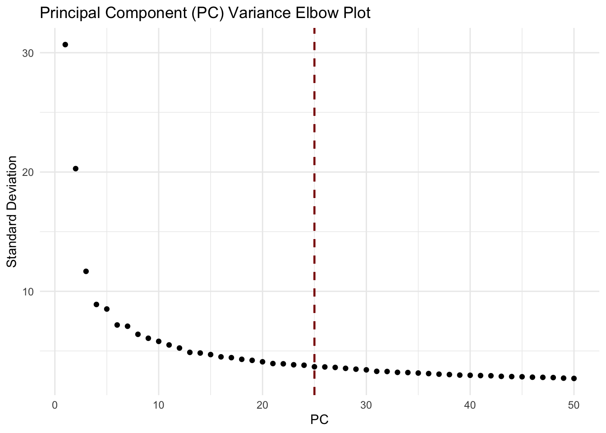
| Version | Author | Date |
|---|---|---|
| f44fffe | Sophie.Alice | 2026-06-24 |
1.5 Clustering without integration
Dims <- 25
Data <- RunUMAP(Data, dims = 1:Dims)Warning: The default method for RunUMAP has changed from calling Python UMAP via reticulate to the R-native UWOT using the cosine metric
To use Python UMAP via reticulate, set umap.method to 'umap-learn' and metric to 'correlation'
This message will be shown once per session16:01:49 UMAP embedding parameters a = 0.9922 b = 1.11216:01:49 Read 13577 rows and found 25 numeric columns16:01:49 Using Annoy for neighbor search, n_neighbors = 3016:01:49 Building Annoy index with metric = cosine, n_trees = 500% 10 20 30 40 50 60 70 80 90 100%[----|----|----|----|----|----|----|----|----|----|**************************************************|
16:01:49 Writing NN index file to temp file /var/folders/4w/_9gjjltx7r7__536sy6dcwbw0000gn/T//RtmpHJXHEL/file2c7bd0936ca
16:01:49 Searching Annoy index using 1 thread, search_k = 3000
16:01:52 Annoy recall = 100%
16:01:53 Commencing smooth kNN distance calibration using 1 thread with target n_neighbors = 30
16:01:54 Initializing from normalized Laplacian + noise (using RSpectra)
16:01:54 Commencing optimization for 200 epochs, with 557838 positive edges
16:01:54 Using rng type: pcg
16:02:00 Optimization finishedData <- FindNeighbors(Data, dims = 1:Dims)Computing nearest neighbor graph
Computing SNNGraphs(Data)[1] "SCT_nn" "SCT_snn"Data <- FindClusters(Data, graph.name = "SCT_snn", resolution = seq(0.1, 0.8, by=0.1))Modularity Optimizer version 1.3.0 by Ludo Waltman and Nees Jan van Eck
Number of nodes: 13577
Number of edges: 460495
Running Louvain algorithm...
Maximum modularity in 10 random starts: 0.9677
Number of communities: 6
Elapsed time: 1 seconds
Modularity Optimizer version 1.3.0 by Ludo Waltman and Nees Jan van Eck
Number of nodes: 13577
Number of edges: 460495
Running Louvain algorithm...
Maximum modularity in 10 random starts: 0.9480
Number of communities: 6
Elapsed time: 1 seconds
Modularity Optimizer version 1.3.0 by Ludo Waltman and Nees Jan van Eck
Number of nodes: 13577
Number of edges: 460495
Running Louvain algorithm...
Maximum modularity in 10 random starts: 0.9318
Number of communities: 12
Elapsed time: 1 seconds
Modularity Optimizer version 1.3.0 by Ludo Waltman and Nees Jan van Eck
Number of nodes: 13577
Number of edges: 460495
Running Louvain algorithm...
Maximum modularity in 10 random starts: 0.9169
Number of communities: 14
Elapsed time: 1 seconds
Modularity Optimizer version 1.3.0 by Ludo Waltman and Nees Jan van Eck
Number of nodes: 13577
Number of edges: 460495
Running Louvain algorithm...
Maximum modularity in 10 random starts: 0.9029
Number of communities: 14
Elapsed time: 1 seconds
Modularity Optimizer version 1.3.0 by Ludo Waltman and Nees Jan van Eck
Number of nodes: 13577
Number of edges: 460495
Running Louvain algorithm...
Maximum modularity in 10 random starts: 0.8888
Number of communities: 14
Elapsed time: 1 seconds
Modularity Optimizer version 1.3.0 by Ludo Waltman and Nees Jan van Eck
Number of nodes: 13577
Number of edges: 460495
Running Louvain algorithm...
Maximum modularity in 10 random starts: 0.8766
Number of communities: 17
Elapsed time: 1 seconds
Modularity Optimizer version 1.3.0 by Ludo Waltman and Nees Jan van Eck
Number of nodes: 13577
Number of edges: 460495
Running Louvain algorithm...
Maximum modularity in 10 random starts: 0.8659
Number of communities: 19
Elapsed time: 1 secondsclustree::clustree(Data@meta.data[,grep("SCT_snn_res", colnames(Data@meta.data))],
prefix = "SCT_snn_res.")+
labs(
title = "Clustree - Before integration"
) +
xlab("Cluster") +
ylab("Resolution depth") +
theme_minimal(base_size = 11)
| Version | Author | Date |
|---|---|---|
| f44fffe | Sophie.Alice | 2026-06-24 |
DimPlot(Data, reduction = "umap", shuffle = T,
group.by = c("SCT_snn_res.0.1", "orig.ident"), ncol = 2)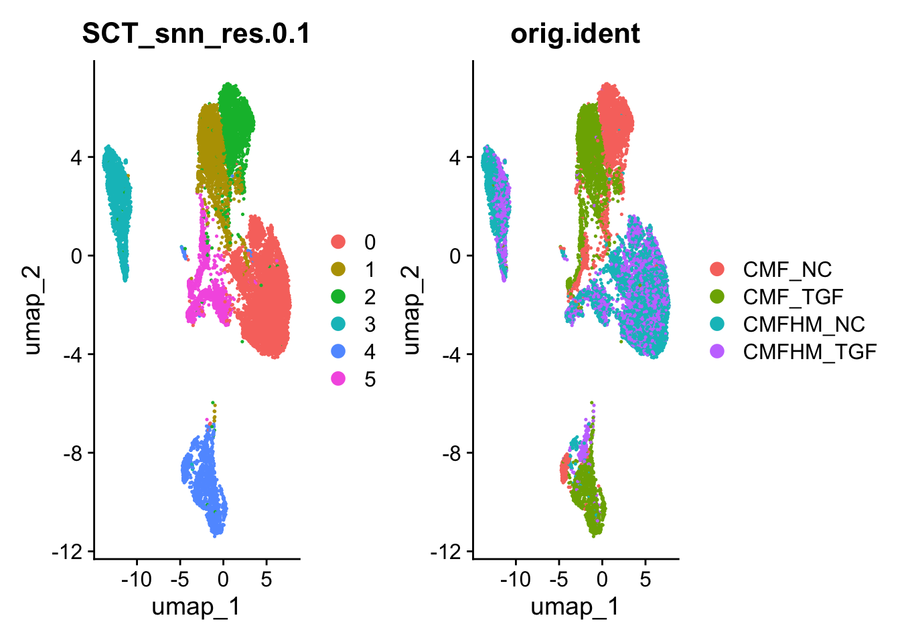
| Version | Author | Date |
|---|---|---|
| f44fffe | Sophie.Alice | 2026-06-24 |
1.6 Intergration with Harmony
Data <- RunHarmony(Data,
group.by.vars = "orig.ident",
dims.use = 1:Dims,
plot_convergence=TRUE,
.options = harmony_options(
max.iter.cluster = 100,
)
)Transposing data matrixUsing automatic lambda estimationThetas: 2Initializing state using k-means centroids initializationInitializing centroidsHarmony 1/10Harmony 2/10Harmony 3/10Harmony 4/10Harmony 5/10Harmony converged after 5 iterations
| Version | Author | Date |
|---|---|---|
| f44fffe | Sophie.Alice | 2026-06-24 |
DefaultAssay(Data) <- "SCT"
Data <- RunUMAP(Data, dims = 1:Dims, reduction = "harmony")16:02:20 UMAP embedding parameters a = 0.9922 b = 1.11216:02:20 Read 13577 rows and found 25 numeric columns16:02:20 Using Annoy for neighbor search, n_neighbors = 3016:02:20 Building Annoy index with metric = cosine, n_trees = 500% 10 20 30 40 50 60 70 80 90 100%[----|----|----|----|----|----|----|----|----|----|**************************************************|
16:02:20 Writing NN index file to temp file /var/folders/4w/_9gjjltx7r7__536sy6dcwbw0000gn/T//RtmpHJXHEL/file2c7b31dec718
16:02:20 Searching Annoy index using 1 thread, search_k = 3000
16:02:23 Annoy recall = 100%
16:02:24 Commencing smooth kNN distance calibration using 1 thread with target n_neighbors = 30
16:02:25 Initializing from normalized Laplacian + noise (using RSpectra)
16:02:25 Commencing optimization for 200 epochs, with 561634 positive edges
16:02:25 Using rng type: pcg
16:02:31 Optimization finishedData <- FindNeighbors(Data, dims = 1:Dims, reduction = "harmony")Computing nearest neighbor graph
Computing SNNData <- FindClusters(Data, resolution = seq(0.1, 0.8, by=0.1))Modularity Optimizer version 1.3.0 by Ludo Waltman and Nees Jan van Eck
Number of nodes: 13577
Number of edges: 447562
Running Louvain algorithm...
Maximum modularity in 10 random starts: 0.9550
Number of communities: 6
Elapsed time: 1 seconds
Modularity Optimizer version 1.3.0 by Ludo Waltman and Nees Jan van Eck
Number of nodes: 13577
Number of edges: 447562
Running Louvain algorithm...
Maximum modularity in 10 random starts: 0.9249
Number of communities: 8
Elapsed time: 1 seconds
Modularity Optimizer version 1.3.0 by Ludo Waltman and Nees Jan van Eck
Number of nodes: 13577
Number of edges: 447562
Running Louvain algorithm...
Maximum modularity in 10 random starts: 0.8957
Number of communities: 9
Elapsed time: 1 seconds
Modularity Optimizer version 1.3.0 by Ludo Waltman and Nees Jan van Eck
Number of nodes: 13577
Number of edges: 447562
Running Louvain algorithm...
Maximum modularity in 10 random starts: 0.8765
Number of communities: 10
Elapsed time: 1 seconds
Modularity Optimizer version 1.3.0 by Ludo Waltman and Nees Jan van Eck
Number of nodes: 13577
Number of edges: 447562
Running Louvain algorithm...
Maximum modularity in 10 random starts: 0.8622
Number of communities: 11
Elapsed time: 1 seconds
Modularity Optimizer version 1.3.0 by Ludo Waltman and Nees Jan van Eck
Number of nodes: 13577
Number of edges: 447562
Running Louvain algorithm...
Maximum modularity in 10 random starts: 0.8503
Number of communities: 12
Elapsed time: 1 seconds
Modularity Optimizer version 1.3.0 by Ludo Waltman and Nees Jan van Eck
Number of nodes: 13577
Number of edges: 447562
Running Louvain algorithm...
Maximum modularity in 10 random starts: 0.8397
Number of communities: 15
Elapsed time: 1 seconds
Modularity Optimizer version 1.3.0 by Ludo Waltman and Nees Jan van Eck
Number of nodes: 13577
Number of edges: 447562
Running Louvain algorithm...
Maximum modularity in 10 random starts: 0.8325
Number of communities: 19
Elapsed time: 1 secondsclustree::clustree(Data@meta.data[,grep("SCT_snn_res", colnames(Data@meta.data))],
prefix = "SCT_snn_res.")+
labs(
title = "Clustree - After integration"
) +
xlab("Cluster") +
ylab("Resolution depth") +
theme_minimal(base_size = 11)
| Version | Author | Date |
|---|---|---|
| f44fffe | Sophie.Alice | 2026-06-24 |
DimPlot(Data, reduction = "umap", shuffle = T,
group.by = c("SCT_snn_res.0.1", "SCT_snn_res.0.2", "SCT_snn_res.0.3", "orig.ident"), ncol = 2, label=T) 
| Version | Author | Date |
|---|---|---|
| f44fffe | Sophie.Alice | 2026-06-24 |
1.7 Top markers per cluster
DefaultAssay(Data) <- "RNA"
Data <- NormalizeData(Data)
Idents(Data) <- "SCT_snn_res.0.2"
Markers <- FindAllMarkers(Data, only.pos = TRUE, min.pct = 0.5, logfc.threshold = 1)Calculating cluster 0For a (much!) faster implementation of the Wilcoxon Rank Sum Test,
(default method for FindMarkers) please install the presto package
--------------------------------------------
install.packages('devtools')
devtools::install_github('immunogenomics/presto')
--------------------------------------------
After installation of presto, Seurat will automatically use the more
efficient implementation (no further action necessary).
This message will be shown once per sessionCalculating cluster 1Calculating cluster 2Calculating cluster 3Calculating cluster 4Calculating cluster 5Calculating cluster 6Calculating cluster 7#write.csv(Markers, here::here(output_dir_data, "DCM_RV_Markers_all_low_quality.csv"))
Markers_top10 <- as.data.frame(Markers %>% group_by(cluster) %>% top_n(n = 10, wt = avg_log2FC))
#write.csv(Markers_top10, here::here(output_dir_data, "DCM_RV_Markers_top10_low_quality.csv"))
Markers_top3 <- as.data.frame(Markers %>% group_by(cluster) %>% top_n(n = 3, wt = avg_log2FC))
#write.csv(Markers_top3, here::here(output_dir_data, "DCM_RV_Markers_top3_low_quality.csv"))heatmap_cols <- colorRampPalette(RColorBrewer::brewer.pal(9,"RdBu"))(256)
heatmap_cols <- rev(heatmap_cols[1:256])
Heatmap <- DoHeatmap(subset(Data, cells = sample(colnames(Data), 10000)), label = FALSE, draw.line = F, features = Markers_top10$gene, assay = "SCT") +
scale_fill_gradientn(colours = heatmap_cols) +
theme(axis.text.y = element_text(size = 5)) +
theme(plot.margin = unit(c(0.1, 0, 0, 0),
"inches"))Warning in DoHeatmap(subset(Data, cells = sample(colnames(Data), 10000)), : The
following features were omitted as they were not found in the scale.data layer
for the SCT assay: SBF2, NDUFB3, MRPL41, COX14, PRDX2, FCGR2C, BIN2, CD86,
TRPM2, CLEC7AScale for fill is already present.
Adding another scale for fill, which will replace the existing scale.HeatmapWarning: Removed 2484 rows containing missing values or values outside the scale range
(`geom_point()`).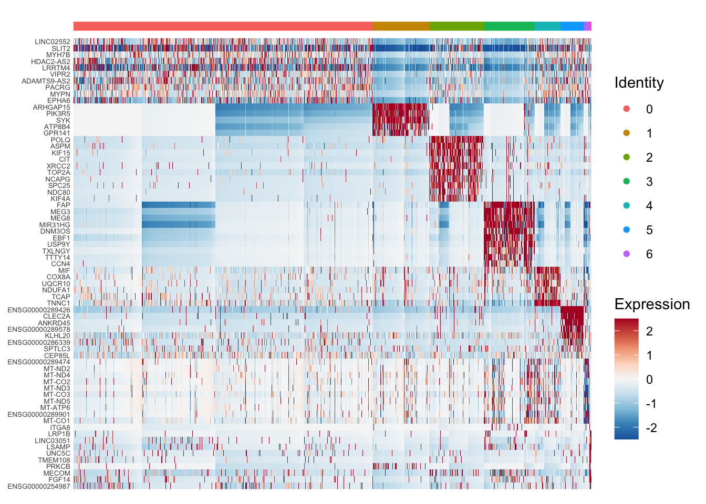
| Version | Author | Date |
|---|---|---|
| f44fffe | Sophie.Alice | 2026-06-24 |
DimPlot(Data, reduction = "umap", shuffle = T,
group.by = c("SCT_snn_res.0.2", "orig.ident"), ncol = 2, label=T)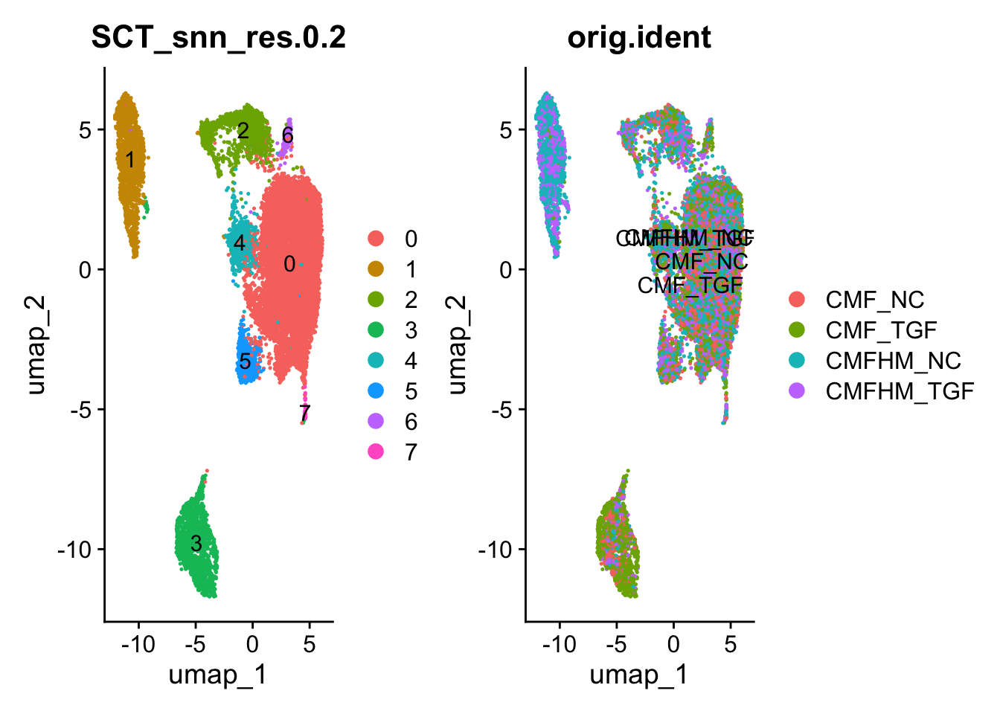
| Version | Author | Date |
|---|---|---|
| f44fffe | Sophie.Alice | 2026-06-24 |
VlnPlot(Data, features = c("nCount_RNA", "nFeature_RNA", "percent.mt", "percent.rp", "scDblFinder.score"), ncol = 3, pt.size = 0) + theme(axis.title.x = element_blank())
| Version | Author | Date |
|---|---|---|
| f44fffe | Sophie.Alice | 2026-06-24 |
# Checking Cluster 0 -> Cardiomyocytes
VlnPlot_scCustom(Data, features = dplyr::filter(Markers_top10, cluster == "0")$gene, num_columns = 5, pt.size = 0) + theme(axis.title.x = element_blank())
| Version | Author | Date |
|---|---|---|
| f44fffe | Sophie.Alice | 2026-06-24 |
dplyr::filter(Markers_top10, cluster == "0") p_val avg_log2FC pct.1 pct.2 p_val_adj cluster gene
1 0.000000e+00 1.376569 0.734 0.412 0.000000e+00 0 LINC02552
2 0.000000e+00 1.454225 0.904 0.585 0.000000e+00 0 SLIT2
3 0.000000e+00 1.482149 0.653 0.338 0.000000e+00 0 MYH7B
4 2.286147e-307 1.327578 0.697 0.408 8.825901e-303 0 HDAC2-AS2
5 8.613780e-303 1.708242 0.619 0.328 3.325436e-298 0 LRRTM4
6 3.722429e-273 1.415850 0.603 0.324 1.437081e-268 0 VIPR2
7 9.435792e-258 1.434168 0.603 0.339 3.642782e-253 0 ADAMTS9-AS2
8 1.997834e-233 1.321565 0.586 0.327 7.712837e-229 0 PACRG
9 4.529274e-199 1.317460 0.519 0.285 1.748572e-194 0 MYPN
10 3.228882e-190 1.414047 0.518 0.285 1.246542e-185 0 EPHA6# Checking Cluster 1 -> Monocytes
VlnPlot_scCustom(Data, features = dplyr::filter(Markers_top10, cluster == "1")$gene, num_columns = 5, pt.size = 0) + theme(axis.title.x = element_blank())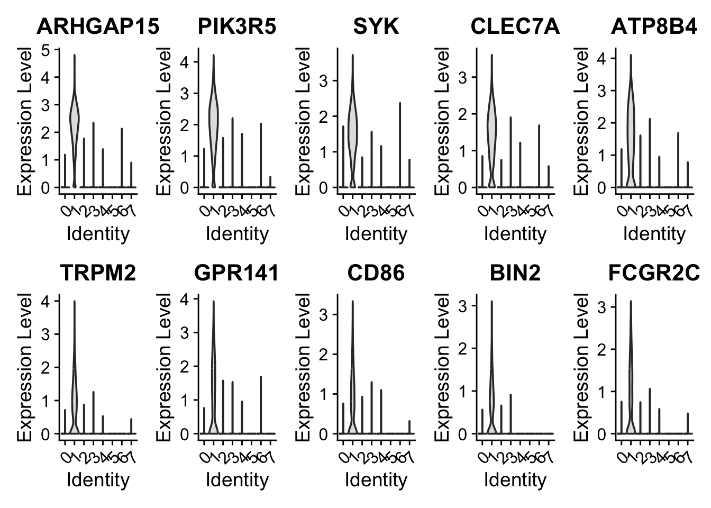
| Version | Author | Date |
|---|---|---|
| f44fffe | Sophie.Alice | 2026-06-24 |
dplyr::filter(Markers_top10, cluster == "1") p_val avg_log2FC pct.1 pct.2 p_val_adj cluster gene
1 0 9.397821 0.941 0.008 0 1 ARHGAP15
2 0 9.314598 0.939 0.007 0 1 PIK3R5
3 0 9.286384 0.894 0.006 0 1 SYK
4 0 9.372980 0.853 0.005 0 1 CLEC7A
5 0 9.429034 0.787 0.006 0 1 ATP8B4
6 0 9.587778 0.672 0.004 0 1 TRPM2
7 0 9.707323 0.622 0.003 0 1 GPR141
8 0 9.309565 0.619 0.003 0 1 CD86
9 0 9.273336 0.617 0.003 0 1 BIN2
10 0 9.788927 0.597 0.003 0 1 FCGR2C# Checking Cluster 2 -> proliferating cells
VlnPlot_scCustom(Data, features = dplyr::filter(Markers_top10, cluster == "2")$gene, num_columns = 5, pt.size = 0) + theme(axis.title.x = element_blank())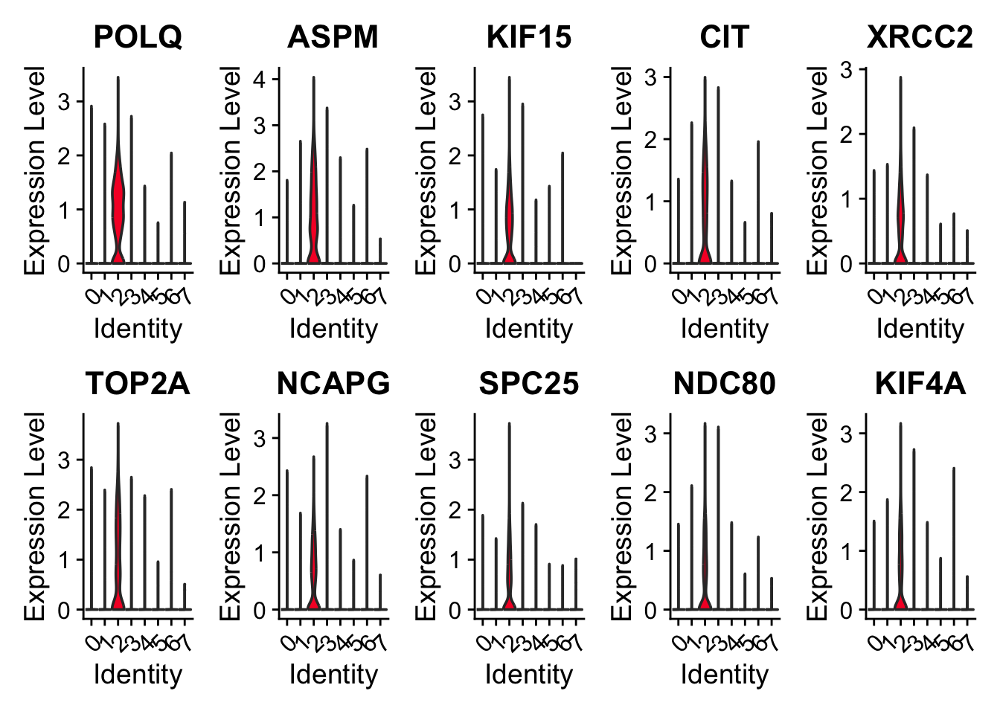
| Version | Author | Date |
|---|---|---|
| f44fffe | Sophie.Alice | 2026-06-24 |
dplyr::filter(Markers_top10, cluster == "2") p_val avg_log2FC pct.1 pct.2 p_val_adj cluster gene
1 0 4.827993 0.785 0.053 0 2 POLQ
2 0 4.731475 0.710 0.070 0 2 ASPM
3 0 5.097813 0.645 0.035 0 2 KIF15
4 0 5.057539 0.598 0.032 0 2 CIT
5 0 4.717591 0.602 0.039 0 2 XRCC2
6 0 4.725839 0.615 0.063 0 2 TOP2A
7 0 4.732835 0.581 0.031 0 2 NCAPG
8 0 4.827854 0.526 0.039 0 2 SPC25
9 0 4.999222 0.507 0.027 0 2 NDC80
10 0 5.027055 0.500 0.026 0 2 KIF4A# Checking Cluster 3 -> For sure cardiac Fibroblasts
VlnPlot_scCustom(Data, features = dplyr::filter(Markers_top10, cluster == "3")$gene, num_columns = 5, pt.size = 0) + theme(axis.title.x = element_blank())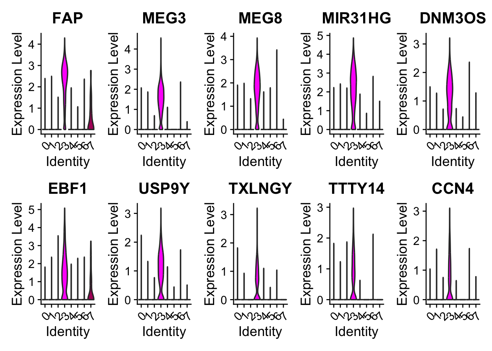
| Version | Author | Date |
|---|---|---|
| f44fffe | Sophie.Alice | 2026-06-24 |
dplyr::filter(Markers_top10, cluster == "3") p_val avg_log2FC pct.1 pct.2 p_val_adj cluster gene
1 0 8.557582 0.914 0.016 0 3 FAP
2 0 9.522802 0.879 0.005 0 3 MEG3
3 0 8.663342 0.877 0.008 0 3 MEG8
4 0 9.620054 0.865 0.009 0 3 MIR31HG
5 0 8.993072 0.805 0.005 0 3 DNM3OS
6 0 8.628523 0.786 0.007 0 3 EBF1
7 0 8.722863 0.782 0.005 0 3 USP9Y
8 0 8.780661 0.644 0.003 0 3 TXLNGY
9 0 8.714288 0.643 0.003 0 3 TTTY14
10 0 9.018380 0.594 0.003 0 3 CCN4# Checking Cluster 4 -> TNNC1 high = beating subunit?
VlnPlot_scCustom(Data, features = dplyr::filter(Markers_top10, cluster == "4")$gene, num_columns = 5, pt.size = 0) + theme(axis.title.x = element_blank())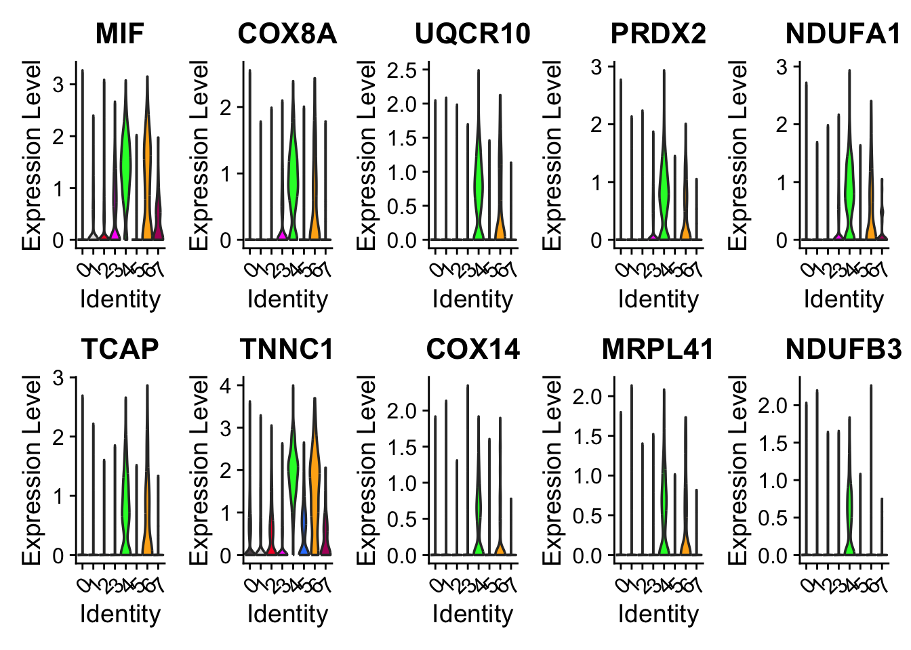
| Version | Author | Date |
|---|---|---|
| f44fffe | Sophie.Alice | 2026-06-24 |
dplyr::filter(Markers_top10, cluster == "4") p_val avg_log2FC pct.1 pct.2 p_val_adj cluster gene
1 0.000000e+00 3.085112 0.934 0.260 0.000000e+00 4 MIF
2 0.000000e+00 2.958720 0.796 0.176 0.000000e+00 4 COX8A
3 0.000000e+00 3.152021 0.718 0.129 0.000000e+00 4 UQCR10
4 0.000000e+00 2.914570 0.742 0.174 0.000000e+00 4 PRDX2
5 0.000000e+00 2.897757 0.741 0.182 0.000000e+00 4 NDUFA1
6 0.000000e+00 2.959015 0.706 0.157 0.000000e+00 4 TCAP
7 0.000000e+00 3.012228 0.991 0.443 0.000000e+00 4 TNNC1
8 0.000000e+00 3.145853 0.541 0.086 0.000000e+00 4 COX14
9 3.568425e-301 2.952484 0.590 0.112 1.377626e-296 4 MRPL41
10 1.577778e-300 2.928592 0.578 0.107 6.091169e-296 4 NDUFB3# Checking Cluster 5 -> SPTLC3: Could be the Hypoxic core?
VlnPlot_scCustom(Data, features = dplyr::filter(Markers_top10, cluster == "5")$gene, num_columns = 5, pt.size = 0) + theme(axis.title.x = element_blank())
| Version | Author | Date |
|---|---|---|
| f44fffe | Sophie.Alice | 2026-06-24 |
dplyr::filter(Markers_top10, cluster == "5") p_val avg_log2FC pct.1 pct.2 p_val_adj cluster gene
1 0.000000e+00 5.762524 0.993 0.077 0.000000e+00 5 ENSG00000289426
2 0.000000e+00 6.547052 0.873 0.036 0.000000e+00 5 CLEC2A
3 0.000000e+00 6.012969 0.846 0.030 0.000000e+00 5 ANKRD45
4 0.000000e+00 7.166082 0.608 0.024 0.000000e+00 5 ENSG00000289578
5 4.024984e-256 3.227567 0.920 0.491 1.553885e-251 5 KLHL20
6 5.500216e-177 3.356114 0.526 0.131 2.123413e-172 5 ENSG00000286339
7 5.682769e-100 1.840727 0.518 0.177 2.193890e-95 5 SPTLC3
8 5.120959e-36 1.043529 0.971 0.938 1.976998e-31 5 SBF2
9 3.673676e-29 1.120018 0.825 0.687 1.418259e-24 5 CEP85L# Checking Cluster 8 -> Dying cells: mitrochondrial gene count is high
VlnPlot_scCustom(Data, features = dplyr::filter(Markers_top10, cluster == "6")$gene, num_columns = 5, pt.size = 0) + theme(axis.title.x = element_blank())
| Version | Author | Date |
|---|---|---|
| f44fffe | Sophie.Alice | 2026-06-24 |
dplyr::filter(Markers_top10, cluster == "6") p_val avg_log2FC pct.1 pct.2 p_val_adj cluster gene
1 6.805747e-181 5.273211 0.771 0.095 2.627427e-176 6 ENSG00000289474
2 1.483459e-178 4.814909 0.729 0.085 5.727042e-174 6 MT-ND2
3 2.490329e-177 4.705614 0.896 0.146 9.614164e-173 6 MT-ND4
4 1.307512e-163 4.424484 0.903 0.158 5.047783e-159 6 MT-CO2
5 6.473867e-156 4.621620 0.694 0.087 2.499301e-151 6 MT-ND3
6 1.231694e-152 4.410373 0.986 0.234 4.755077e-148 6 MT-CO3
7 5.582027e-152 4.369968 0.750 0.107 2.154997e-147 6 MT-ND5
8 3.821698e-150 4.332206 0.785 0.120 1.475405e-145 6 MT-ATP6
9 4.055759e-146 4.617551 0.646 0.078 1.565766e-141 6 ENSG00000289901
10 1.256300e-137 4.307805 0.972 0.260 4.850072e-133 6 MT-CO1# Checking Cluster 7 -> probably doublets
VlnPlot_scCustom(Data, features = dplyr::filter(Markers_top10, cluster == "7")$gene, num_columns = 5, pt.size = 0) + theme(axis.title.x = element_blank())
| Version | Author | Date |
|---|---|---|
| f44fffe | Sophie.Alice | 2026-06-24 |
dplyr::filter(Markers_top10, cluster == "7") p_val avg_log2FC pct.1 pct.2 p_val_adj cluster gene
1 5.579230e-175 7.150568 0.511 0.013 2.153918e-170 7 ITGA8
2 5.753937e-157 5.194766 0.638 0.024 2.221365e-152 7 LRP1B
3 6.677273e-92 6.382569 0.702 0.051 2.577828e-87 7 LINC03051
4 3.479014e-78 5.912639 0.809 0.084 1.343108e-73 7 LSAMP
5 1.185706e-69 5.695004 0.723 0.075 4.577536e-65 7 UNC5C
6 8.270534e-62 4.770915 0.638 0.060 3.192922e-57 7 TMEM108
7 1.158301e-49 4.870754 0.511 0.049 4.471738e-45 7 PRKCB
8 5.985365e-45 4.541903 0.787 0.148 2.310710e-40 7 MECOM
9 3.125613e-37 7.069174 0.617 0.103 1.206674e-32 7 FGF14
10 4.773876e-28 4.434332 0.681 0.155 1.843003e-23 7 ENSG00000254987# Remove only the clearly mitochondrial cluster and the left over doubles
Data.clean <- subset(Data, subset = SCT_snn_res.0.2 %in% c("0", "1", "2", "3", "4","5"))
s.genes <- cc.genes$s.genes
g2m.genes <- cc.genes$g2m.genes
Data.clean <- CellCycleScoring(Data.clean, s.features = s.genes, g2m.features = g2m.genes)Warning: The following features are not present in the object: MLF1IP, not
searching for symbol synonymsWarning: The following features are not present in the object: FAM64A, HN1, not
searching for symbol synonymsDefaultAssay(Data.clean) <- "SCT"
Data.clean <- SplitObject(Data.clean, split.by = "orig.ident")
features <- SelectIntegrationFeatures(object.list = Data.clean, nfeatures = 3000)
Data.clean <- merge(x = Data.clean[[1]], y = Data.clean[2:length(Data.clean)], merge.data=TRUE)
VariableFeatures(Data.clean) <- features
Data.clean <- RunPCA(Data.clean, npcs = 50)PC_ 1
Positive: KCNMA1, PLXDC2, LRMDA, DPYD, ZEB2, DOCK10, RBM47, LINC-PINT, TRPS1, DOCK2
MSR1, PTPRC, FMNL2, DAB2, GPNMB, BNC2, ARHGAP15, FRMD4A, FMN1, SLC38A6
ARHGAP22, TPRG1, DMXL2, ARHGAP18, PIK3R5, MCTP1, TFEC, DOCK4, TBXAS1, IQGAP2
Negative: FGF12, KCNIP4, SLIT2, BRINP3, FHL2, FBN2, ERBB4, DMD, DLG2, CTNNA3
PCDH7, CACNB2, TECRL, RYR2, CHRM2, TNNI3K, FHOD3, EMC10, NCKAP5, INPP4B
MID1, MLIP, NLGN1, SLIT3, IL1RAPL1, CORIN, NEBL, LAMA2, NCAM1, CSMD1
PC_ 2
Positive: LRMDA, RBM47, PTPRC, DAPK1, PLXDC2, ARHGAP15, ELMO1, ZNF804A, DOCK2, DMXL2
PIK3R5, IQGAP2, DOCK8, TFEC, FRMD4B, FYB1, ST18, TPRG1, ZEB2, NPL
AOAH, TBXAS1, XIST, SFMBT2, CCDC88A, ITGAX, MBP, ATP8B4, CD36, SLCO2B1
Negative: FN1, COL6A3, COL1A2, COL1A1, COL3A1, POSTN, SULF1, FBN1, FAP, FRMD6
ADAM12, COL5A2, MIR31HG, HMGA2, COL8A1, VCAN, MEG8, COL12A1, SPARC, ITGBL1
SERPINE2, MEG3, CLMP, COL5A1, SGCD, EBF1, VEGFC, PRKG1, TIMP3, BICC1
PC_ 3
Positive: DIAPH3, CENPF, TOP2A, MIR924HG, ASPM, ANLN, TPX2, SMC4, CIT, BRIP1
KNL1, KIF20B, NUF2, POLQ, NUSAP1, APOLD1, BUB1, CEP128, BUB1B, ENSG00000290886
CENPE, KIF4A, KIF14, KIF15, NDC80, ECT2, NCAPG, MKI67, ATAD2, PRC1
Negative: PTCHD4, LRRTM4, PURPL, SLIT2, LINC01411, EPHA6, NCKAP5, NEAT1, ENSG00000286749, MIR100HG
PCDH9, FHL2, ADAMTS9-AS2, TENT5A, TSHZ2, EYA4, ENSG00000289309, PDLIM3, HDAC2-AS2, TRDN
KCNIP4, DAB1, EDNRA, EFCAB13, MYBPC3, CREB5, KCNMB2-AS1, CMYA5, CDH8, ATP2B4
PC_ 4
Positive: CHI3L1, DOCK3, GAPDH, VIM, GPC4, SPP1, EEF1A1, PPARG, MYL7, B2M
CD63, TPRG1, S100A4, RPLP1, H19, TNNC1, FNIP2, ENSG00000259760, RGCC, TNNI1
RASGEF1B, ACTC1, ENSG00000286153, FTH1, ZBTB7C, MIF, SRP14, S100A6, PAQR5, ENSG00000286062
Negative: BNC2, CD163L1, GPR141, AOAH, FRMD4A, NAV3, FUCA1, PDGFC, CIITA, DOCK4
ELMO1, TCF4, XYLT1, ITPR2, SLC9A9, FMN1, IGF1, STAB1, ADAMTSL1, DNM3
DPYD, TRPS1, ATP8B4, SAMSN1, TENM3, DOCK10, PREX1, ADAMTS6, MARCHF1, MGAT4A
PC_ 5
Positive: GAPDH, H19, MYL7, TNNI1, TNNC1, ACTC1, EEF1A1, RPLP1, MIF, MYH7
SRP14, MYL2, CSRP3, HSPB1, RPL41, CD163L1, HSPB7, GPR141, TPT1, FUCA1
RPL8, RPL13A, RPS8, RPS23, ATP5MC3, COX7C, AOAH, RPL13, TGFBI, RPS28
Negative: DOCK3, MSC-AS1, MIR222HG, ENSG00000286153, GPC4, ALCAM, FNIP2, RGCC, CHI3L1, NABP1
ENSG00000259760, ENSG00000286062, NUMB, CDH23, NAV3, SLC28A3, RASGEF1B, APBB2, MYOF, CD44
CBLB, ZBTB7C, MCOLN3, DYNLT2B, TPRG1, ENSG00000238280, LRCH1, MREG, PPARG, GLS Data.clean <- RunHarmony(Data.clean,
group.by.vars = c("orig.ident"),
dims.use = 1:Dims,
plot_convergence=TRUE,
.options = harmony_options(
max.iter.cluster = 100,
)
)Transposing data matrixUsing automatic lambda estimationThetas: 2Initializing state using k-means centroids initializationInitializing centroidsHarmony 1/10Harmony 2/10Harmony 3/10Harmony 4/10Harmony 5/10Harmony converged after 5 iterations
| Version | Author | Date |
|---|---|---|
| f44fffe | Sophie.Alice | 2026-06-24 |
DefaultAssay(Data.clean) <- "SCT"
Data.clean <- RunUMAP(Data.clean, dims = 1:Dims, reduction = "harmony")16:04:52 UMAP embedding parameters a = 0.9922 b = 1.11216:04:52 Read 13386 rows and found 25 numeric columns16:04:52 Using Annoy for neighbor search, n_neighbors = 3016:04:52 Building Annoy index with metric = cosine, n_trees = 500% 10 20 30 40 50 60 70 80 90 100%[----|----|----|----|----|----|----|----|----|----|**************************************************|
16:04:52 Writing NN index file to temp file /var/folders/4w/_9gjjltx7r7__536sy6dcwbw0000gn/T//RtmpHJXHEL/file2c7b2183f064
16:04:52 Searching Annoy index using 1 thread, search_k = 3000
16:04:55 Annoy recall = 100%
16:04:55 Commencing smooth kNN distance calibration using 1 thread with target n_neighbors = 30
16:04:56 Initializing from normalized Laplacian + noise (using RSpectra)
16:04:57 Commencing optimization for 200 epochs, with 554098 positive edges
16:04:57 Using rng type: pcg
16:05:02 Optimization finishedData.clean <- FindNeighbors(Data.clean, dims = 1:Dims, reduction = "harmony")Computing nearest neighbor graph
Computing SNNData.clean <- FindClusters(Data.clean, resolution = seq(0.1, 0.8, by=0.1))Modularity Optimizer version 1.3.0 by Ludo Waltman and Nees Jan van Eck
Number of nodes: 13386
Number of edges: 440202
Running Louvain algorithm...
Maximum modularity in 10 random starts: 0.9546
Number of communities: 6
Elapsed time: 1 seconds
Modularity Optimizer version 1.3.0 by Ludo Waltman and Nees Jan van Eck
Number of nodes: 13386
Number of edges: 440202
Running Louvain algorithm...
Maximum modularity in 10 random starts: 0.9238
Number of communities: 6
Elapsed time: 1 seconds
Modularity Optimizer version 1.3.0 by Ludo Waltman and Nees Jan van Eck
Number of nodes: 13386
Number of edges: 440202
Running Louvain algorithm...
Maximum modularity in 10 random starts: 0.8939
Number of communities: 8
Elapsed time: 1 seconds
Modularity Optimizer version 1.3.0 by Ludo Waltman and Nees Jan van Eck
Number of nodes: 13386
Number of edges: 440202
Running Louvain algorithm...
Maximum modularity in 10 random starts: 0.8748
Number of communities: 9
Elapsed time: 1 seconds
Modularity Optimizer version 1.3.0 by Ludo Waltman and Nees Jan van Eck
Number of nodes: 13386
Number of edges: 440202
Running Louvain algorithm...
Maximum modularity in 10 random starts: 0.8594
Number of communities: 11
Elapsed time: 1 seconds
Modularity Optimizer version 1.3.0 by Ludo Waltman and Nees Jan van Eck
Number of nodes: 13386
Number of edges: 440202
Running Louvain algorithm...
Maximum modularity in 10 random starts: 0.8477
Number of communities: 11
Elapsed time: 1 seconds
Modularity Optimizer version 1.3.0 by Ludo Waltman and Nees Jan van Eck
Number of nodes: 13386
Number of edges: 440202
Running Louvain algorithm...
Maximum modularity in 10 random starts: 0.8382
Number of communities: 14
Elapsed time: 1 seconds
Modularity Optimizer version 1.3.0 by Ludo Waltman and Nees Jan van Eck
Number of nodes: 13386
Number of edges: 440202
Running Louvain algorithm...
Maximum modularity in 10 random starts: 0.8297
Number of communities: 16
Elapsed time: 1 secondsclustree::clustree(Data.clean@meta.data[,grep("SCT_snn_res", colnames(Data.clean@meta.data))],
prefix = "SCT_snn_res.")
| Version | Author | Date |
|---|---|---|
| f44fffe | Sophie.Alice | 2026-06-24 |
DimPlot(Data.clean, reduction = "umap", shuffle = T,
group.by = "SCT_snn_res.0.1", label=T)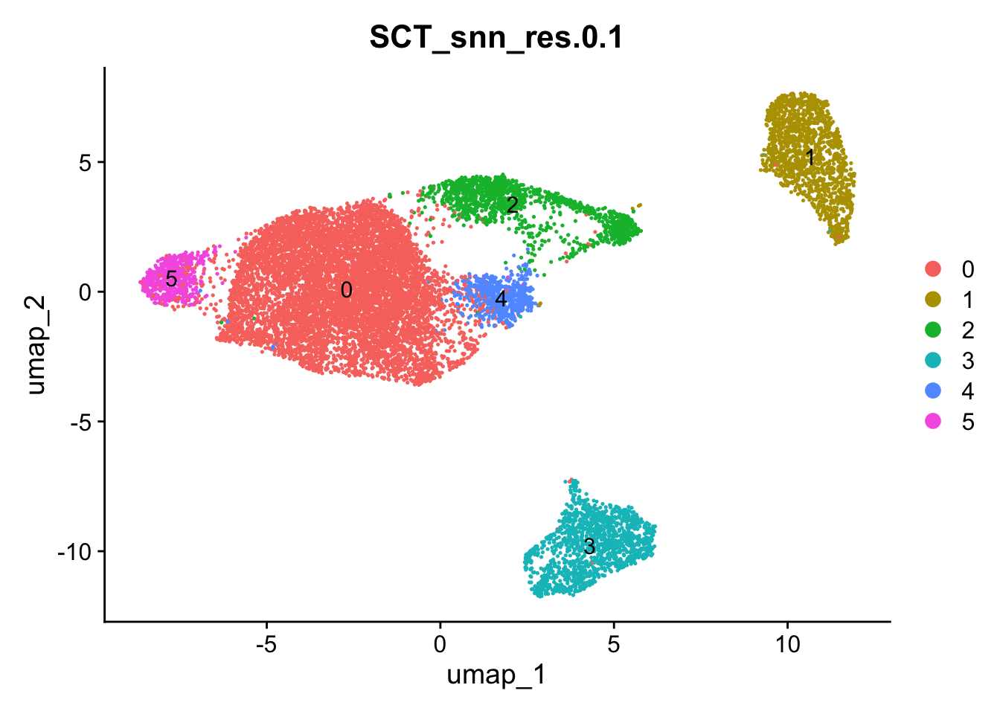
| Version | Author | Date |
|---|---|---|
| f44fffe | Sophie.Alice | 2026-06-24 |
DimPlot(Data.clean, reduction = "umap", shuffle = T,
group.by = "orig.ident", label=T)
| Version | Author | Date |
|---|---|---|
| f44fffe | Sophie.Alice | 2026-06-24 |
DimPlot(Data.clean, reduction = "umap", shuffle = T,
group.by = "Phase", label=T)
| Version | Author | Date |
|---|---|---|
| f44fffe | Sophie.Alice | 2026-06-24 |
DimPlot(Data.clean, reduction = "umap", shuffle = T,
group.by = c("SCT_snn_res.0.1", "orig.ident"), ncol = 2, label=T)
| Version | Author | Date |
|---|---|---|
| f44fffe | Sophie.Alice | 2026-06-24 |
Idents(Data.clean) <- "SCT_snn_res.0.1"
VlnPlot(Data.clean, features = c("nCount_RNA", "nFeature_RNA", "percent.mt", "percent.rp", "scDblFinder.score"), ncol = 3, pt.size = 0) + theme(axis.title.x = element_blank())
| Version | Author | Date |
|---|---|---|
| f44fffe | Sophie.Alice | 2026-06-24 |
### MArker genes
DefaultAssay(Data.clean) <- "RNA"
Idents(Data.clean) <- "SCT_snn_res.0.1"
Markers <- FindAllMarkers(Data.clean, only.pos = TRUE, min.pct = 0.5, logfc.threshold = 1)Calculating cluster 0Calculating cluster 1Calculating cluster 2Calculating cluster 3Calculating cluster 4Calculating cluster 5Markers_top10 <- as.data.frame(Markers %>% group_by(cluster) %>% top_n(n = 10, wt = avg_log2FC))
Markers_top3 <- as.data.frame(Markers %>% group_by(cluster) %>% top_n(n = 3, wt = avg_log2FC))
Markers_top5 <- as.data.frame(Markers %>% group_by(cluster) %>% top_n(n = 5, wt = avg_log2FC))
Markers_top10 p_val avg_log2FC pct.1 pct.2 p_val_adj cluster gene
1 0.000000e+00 1.568097 0.904 0.574 0.000000e+00 0 SLIT2
2 0.000000e+00 1.390840 0.734 0.410 0.000000e+00 0 LINC02552
3 0.000000e+00 1.554874 0.654 0.331 0.000000e+00 0 MYH7B
4 1.218692e-315 1.796753 0.618 0.318 4.704882e-311 0 LRRTM4
5 5.680713e-314 1.361410 0.697 0.400 2.193096e-309 0 HDAC2-AS2
6 2.305649e-278 1.463141 0.603 0.319 8.901189e-274 0 VIPR2
7 3.987861e-270 1.498069 0.604 0.329 1.539553e-265 0 ADAMTS9-AS2
8 5.727855e-225 1.380378 0.559 0.303 2.211296e-220 0 MYOM2
9 1.108741e-194 1.472921 0.518 0.279 4.280405e-190 0 EPHA6
10 1.207697e-194 1.399284 0.533 0.309 4.662434e-190 0 COLQ
11 0.000000e+00 9.237541 0.940 0.007 0.000000e+00 1 PIK3R5
12 0.000000e+00 9.194330 0.941 0.009 0.000000e+00 1 ARHGAP15
13 0.000000e+00 9.288641 0.897 0.006 0.000000e+00 1 SYK
14 0.000000e+00 9.261815 0.855 0.005 0.000000e+00 1 CLEC7A
15 0.000000e+00 9.132151 0.809 0.008 0.000000e+00 1 AOAH
16 0.000000e+00 9.239040 0.790 0.006 0.000000e+00 1 ATP8B4
17 0.000000e+00 9.392620 0.691 0.004 0.000000e+00 1 MIR3667HG
18 0.000000e+00 9.610736 0.675 0.004 0.000000e+00 1 TRPM2
19 0.000000e+00 9.528700 0.623 0.004 0.000000e+00 1 GPR141
20 0.000000e+00 9.686031 0.599 0.003 0.000000e+00 1 FCGR2C
21 0.000000e+00 4.844281 0.787 0.053 0.000000e+00 2 POLQ
22 0.000000e+00 4.718428 0.712 0.050 0.000000e+00 2 DTL
23 0.000000e+00 4.724624 0.708 0.069 0.000000e+00 2 ASPM
24 0.000000e+00 5.108236 0.648 0.035 0.000000e+00 2 KIF15
25 0.000000e+00 4.721017 0.605 0.039 0.000000e+00 2 XRCC2
26 0.000000e+00 5.088581 0.597 0.031 0.000000e+00 2 CIT
27 0.000000e+00 4.731107 0.614 0.061 0.000000e+00 2 TOP2A
28 0.000000e+00 4.752006 0.581 0.030 0.000000e+00 2 NCAPG
29 0.000000e+00 4.797969 0.528 0.038 0.000000e+00 2 SPC25
30 0.000000e+00 5.016143 0.508 0.026 0.000000e+00 2 NDC80
31 0.000000e+00 10.053562 0.876 0.004 0.000000e+00 3 MEG3
32 0.000000e+00 9.531409 0.876 0.007 0.000000e+00 3 MEG8
33 0.000000e+00 10.042727 0.861 0.008 0.000000e+00 3 MIR31HG
34 0.000000e+00 9.542452 0.802 0.004 0.000000e+00 3 DNM3OS
35 0.000000e+00 9.162272 0.792 0.004 0.000000e+00 3 UTY
36 0.000000e+00 10.027893 0.784 0.005 0.000000e+00 3 EBF1
37 0.000000e+00 9.676178 0.671 0.007 0.000000e+00 3 NTM
38 0.000000e+00 9.140648 0.642 0.003 0.000000e+00 3 TTTY14
39 0.000000e+00 10.255843 0.595 0.002 0.000000e+00 3 CCN4
40 0.000000e+00 9.431386 0.544 0.002 0.000000e+00 3 NLGN4Y
41 0.000000e+00 3.181199 0.939 0.257 0.000000e+00 4 MIF
42 0.000000e+00 3.079015 0.811 0.174 0.000000e+00 4 COX8A
43 0.000000e+00 2.973485 0.789 0.180 0.000000e+00 4 COX6B1
44 0.000000e+00 3.274154 0.731 0.127 0.000000e+00 4 UQCR10
45 0.000000e+00 2.974750 0.756 0.173 0.000000e+00 4 PRDX2
46 0.000000e+00 2.997314 0.752 0.180 0.000000e+00 4 NDUFA1
47 0.000000e+00 3.103805 0.720 0.154 0.000000e+00 4 TCAP
48 0.000000e+00 3.113503 0.994 0.441 0.000000e+00 4 TNNC1
49 4.418212e-318 3.217910 0.545 0.085 1.705695e-313 4 COX14
50 1.977966e-304 3.051247 0.601 0.110 7.636134e-300 4 MRPL41
51 0.000000e+00 5.762599 0.993 0.076 0.000000e+00 5 ENSG00000289426
52 0.000000e+00 6.552283 0.873 0.036 0.000000e+00 5 CLEC2A
53 0.000000e+00 6.006361 0.846 0.030 0.000000e+00 5 ANKRD45
54 0.000000e+00 7.462028 0.618 0.023 0.000000e+00 5 ENSG00000289578
55 9.773480e-250 3.232508 0.918 0.492 3.773150e-245 5 KLHL20
56 4.295160e-176 3.377630 0.526 0.131 1.658189e-171 5 ENSG00000286339
57 1.833176e-93 1.797302 0.510 0.178 7.077159e-89 5 SPTLC3
58 1.214346e-36 1.051955 0.974 0.939 4.688103e-32 5 SBF2
59 7.929140e-30 1.137619 0.827 0.688 3.061124e-25 5 CEP85LFeaturePlot_scCustom(Data.clean, features = "CD163", pt.size = 0, reduction = "umap") +
theme(axis.title.x = element_blank()) # Macrophage marker
NOTE: FeaturePlot_scCustom uses a specified `na_cutoff` when plotting to
color cells with no expression as background color separate from color scale.
Please ensure `na_cutoff` value is appropriate for feature being plotted.
Default setting is appropriate for use when plotting from 'RNA' assay.
When `na_cutoff` not appropriate (e.g., module scores) set to NULL to
plot all cells in gradient color palette.
-----This message will be shown once per session.-----
| Version | Author | Date |
|---|---|---|
| f44fffe | Sophie.Alice | 2026-06-24 |
FeaturePlot_scCustom(Data.clean, features = "FAP", pt.size = 0, reduction = "umap") +
theme(axis.title.x = element_blank()) # Activated Fibroblast Marker
| Version | Author | Date |
|---|---|---|
| f44fffe | Sophie.Alice | 2026-06-24 |
FeaturePlot_scCustom(Data.clean, features = "TTN", pt.size = 0, reduction = "umap") +
theme(axis.title.x = element_blank()) # Cardiomyocyte marker
| Version | Author | Date |
|---|---|---|
| f44fffe | Sophie.Alice | 2026-06-24 |
FeaturePlot_scCustom(Data.clean, features = c("CENPE", "MKI67"), pt.size = 0, reduction = "umap") +
theme(axis.title.x = element_blank()) # Proliferation marker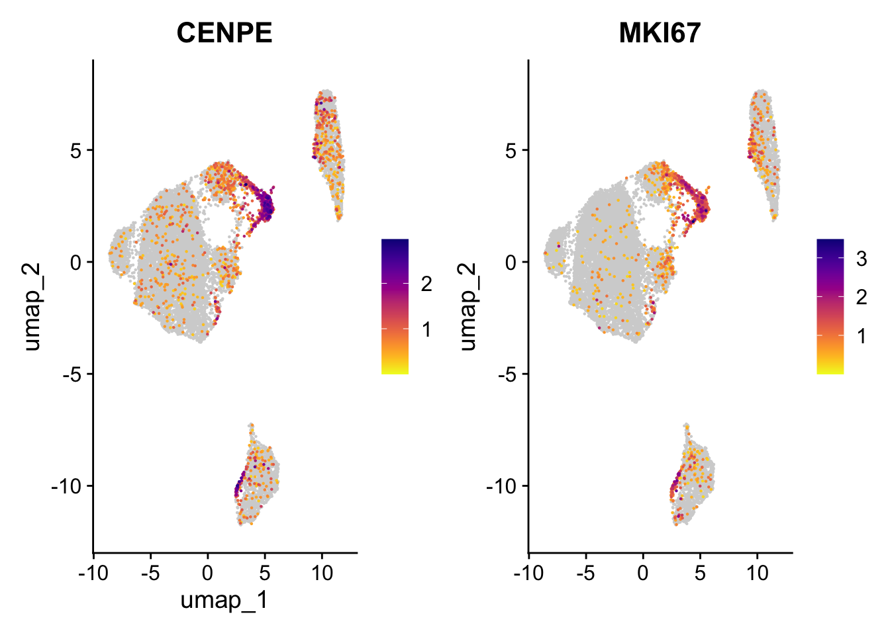
| Version | Author | Date |
|---|---|---|
| f44fffe | Sophie.Alice | 2026-06-24 |
DimPlot(Data.clean, reduction = "umap", shuffle = T,
group.by = "Phase")
| Version | Author | Date |
|---|---|---|
| f44fffe | Sophie.Alice | 2026-06-24 |
FeaturePlot_scCustom(Data.clean, features = c("BNIP3", "VEGFA", "HIF1A"), pt.size = 0, reduction = "umap") +
theme(axis.title.x = element_blank()) #Hypoxia?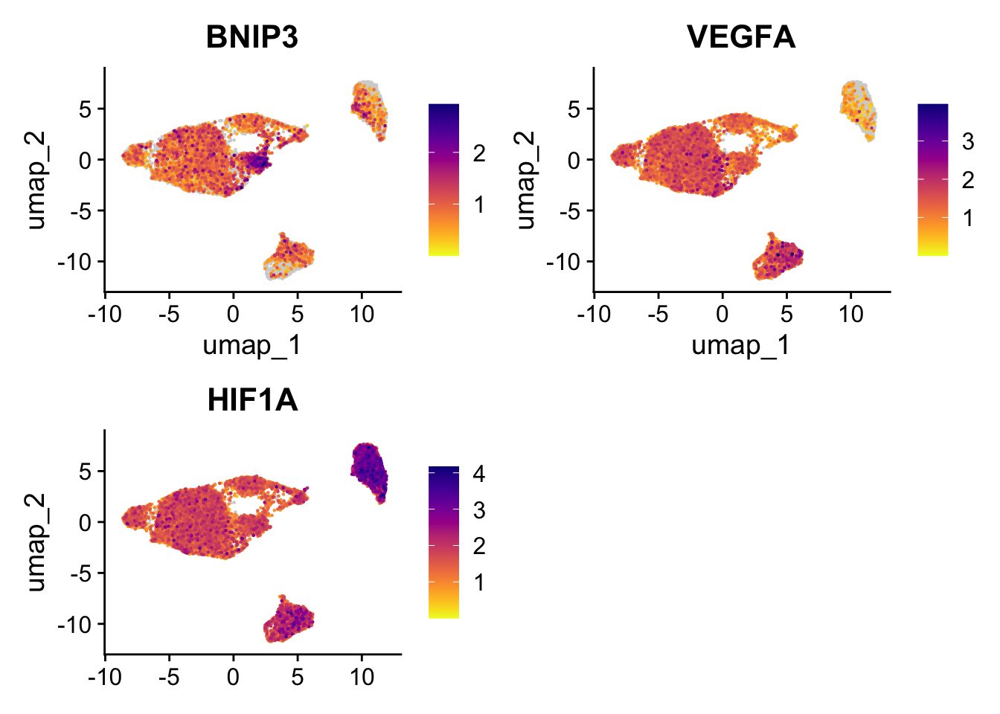
| Version | Author | Date |
|---|---|---|
| f44fffe | Sophie.Alice | 2026-06-24 |
FeaturePlot_scCustom(Data.clean, features = c("ANKRD45", "KLHL20"), pt.size = 0, reduction = "umap") +
theme(axis.title.x = element_blank()) # failing cytokinesis, Binucleation process stuck????
| Version | Author | Date |
|---|---|---|
| f44fffe | Sophie.Alice | 2026-06-24 |
1.8 Renaming Cluster IDs
new_cluster_ids <- c(
"0" = "Cardiomyocytes",
"1" = "Macrophages",
"2" = "Proliferating Cardiomyocytes",
"3" = "Cardiac Fibroblasts",
"4" = "Hypoxic Core?",
"5" = "Unknown?"
)
Data.clean <- RenameIdents(Data.clean, new_cluster_ids)
Data.clean$cell_type <- Idents(Data.clean)
DimPlot(Data.clean, reduction = "umap", shuffle = T,
group.by = "cell_type", label=F)
| Version | Author | Date |
|---|---|---|
| f44fffe | Sophie.Alice | 2026-06-24 |
1.9 Save File
outputdir <- "/Users/sophiewagner/Desktop/USZ 25:26/Gabi_Project_Setup/Laila_MT_Project/Laila_MT_Project/RDS_Files"
# saveRDS(Data.clean, file = file.path(outputdir, "Post_Annotation.rds"))
sessionInfo()R version 4.6.0 (2026-04-24)
Platform: aarch64-apple-darwin23
Running under: macOS Sequoia 15.7.7
Matrix products: default
BLAS: /Library/Frameworks/R.framework/Versions/4.6/Resources/lib/libRblas.0.dylib
LAPACK: /Library/Frameworks/R.framework/Versions/4.6/Resources/lib/libRlapack.dylib; LAPACK version 3.12.1
locale:
[1] en_US.UTF-8/en_US.UTF-8/en_US.UTF-8/C/en_US.UTF-8/en_US.UTF-8
time zone: Europe/Zurich
tzcode source: internal
attached base packages:
[1] stats4 stats graphics grDevices utils datasets methods
[8] base
other attached packages:
[1] future_1.70.0 harmony_2.0.5
[3] Rcpp_1.1.1-1.1 clustree_0.5.1
[5] ggraph_2.2.2 scDblFinder_1.26.2
[7] SingleCellExperiment_1.34.0 SummarizedExperiment_1.42.0
[9] Biobase_2.72.0 GenomicRanges_1.64.0
[11] Seqinfo_1.2.0 IRanges_2.46.0
[13] S4Vectors_0.50.1 BiocGenerics_0.58.1
[15] generics_0.1.4 MatrixGenerics_1.24.0
[17] matrixStats_1.5.0 ggrepel_0.9.8
[19] cowplot_1.2.0 patchwork_1.3.2
[21] scCustomize_3.3.0 hdf5r_1.3.12
[23] Seurat_5.5.0 SeuratObject_5.4.0
[25] sp_2.2-1 ggplot2_4.0.3
[27] dplyr_1.2.1 readr_2.2.0
[29] workflowr_1.7.2
loaded via a namespace (and not attached):
[1] fs_2.1.0 spatstat.sparse_3.2-0
[3] bitops_1.0-9 lubridate_1.9.5
[5] httr_1.4.8 RColorBrewer_1.1-3
[7] backports_1.5.1 tools_4.6.0
[9] sctransform_0.4.3 R6_2.6.1
[11] lazyeval_0.2.3 uwot_0.2.4
[13] withr_3.0.3 gridExtra_2.3.1
[15] progressr_0.19.0 cli_3.6.6
[17] spatstat.explore_3.8-1 fastDummies_1.7.6
[19] prismatic_1.1.2 labeling_0.4.3
[21] sass_0.4.10 S7_0.2.2
[23] spatstat.data_3.1-9 ggridges_0.5.7
[25] pbapply_1.7-4 Rsamtools_2.28.0
[27] scater_1.40.1 parallelly_1.47.0
[29] limma_3.68.4 mcprogress_0.1.1
[31] rstudioapi_0.19.0 shape_1.4.6.1
[33] BiocIO_1.22.0 ica_1.0-3
[35] spatstat.random_3.5-0 Matrix_1.7-5
[37] ggbeeswarm_0.7.3 abind_1.4-8
[39] lifecycle_1.0.5 whisker_0.4.1
[41] yaml_2.3.12 edgeR_4.10.1
[43] snakecase_0.11.1 glmGamPoi_1.24.0
[45] SparseArray_1.12.2 Rtsne_0.17
[47] paletteer_1.7.0 grid_4.6.0
[49] promises_1.5.0 dqrng_0.4.1
[51] crayon_1.5.3 miniUI_0.1.2
[53] lattice_0.22-9 beachmat_2.28.0
[55] cigarillo_1.2.0 metapod_1.20.0
[57] pillar_1.11.1 knitr_1.51
[59] rjson_0.2.23 xgboost_3.2.1.1
[61] future.apply_1.20.2 codetools_0.2-20
[63] glue_1.8.1 getPass_0.2-4
[65] spatstat.univar_3.2-0 data.table_1.18.4
[67] vctrs_0.7.3 png_0.1-9
[69] spam_2.11-4 gtable_0.3.6
[71] rematch2_2.1.2 cachem_1.1.0
[73] xfun_0.59 S4Arrays_1.12.0
[75] mime_0.13 tidygraph_1.3.1
[77] survival_3.8-6 statmod_1.5.2
[79] bluster_1.22.0 fitdistrplus_1.2-6
[81] ROCR_1.0-12 nlme_3.1-169
[83] bit64_4.8.2 RcppAnnoy_0.0.23
[85] GenomeInfoDb_1.48.0 rprojroot_2.1.1
[87] bslib_0.11.0 irlba_2.3.7
[89] vipor_0.4.7 KernSmooth_2.23-26
[91] otel_0.2.0 colorspace_2.1-2
[93] ggrastr_1.0.2 tidyselect_1.2.1
[95] processx_3.9.0 bit_4.6.0
[97] compiler_4.6.0 curl_7.1.0
[99] git2r_0.36.2 BiocNeighbors_2.6.0
[101] DelayedArray_0.38.2 plotly_4.12.0
[103] rtracklayer_1.72.0 checkmate_2.3.4
[105] scales_1.4.0 lmtest_0.9-40
[107] callr_3.8.0 stringr_1.6.0
[109] digest_0.6.39 goftest_1.2-3
[111] spatstat.utils_3.2-3 rmarkdown_2.31
[113] RhpcBLASctl_0.23-42 XVector_0.52.0
[115] htmltools_0.5.9 pkgconfig_2.0.3
[117] sparseMatrixStats_1.24.0 fastmap_1.2.0
[119] rlang_1.2.0 GlobalOptions_0.1.4
[121] htmlwidgets_1.6.4 UCSC.utils_1.7.1
[123] DelayedMatrixStats_1.34.0 shiny_1.14.0
[125] farver_2.1.2 jquerylib_0.1.4
[127] zoo_1.8-15 jsonlite_2.0.0
[129] BiocParallel_1.46.0 BiocSingular_1.28.0
[131] RCurl_1.98-1.19 magrittr_2.0.5
[133] scuttle_1.22.0 dotCall64_1.2
[135] viridis_0.6.5 reticulate_1.46.0
[137] stringi_1.8.7 MASS_7.3-65
[139] plyr_1.8.9 parallel_4.6.0
[141] listenv_1.0.0 forcats_1.0.1
[143] deldir_2.0-4 graphlayouts_1.2.4
[145] Biostrings_2.80.1 splines_4.6.0
[147] tensor_1.5.1 hms_1.1.4
[149] circlize_0.4.18 locfit_1.5-9.12
[151] igraph_2.3.2 spatstat.geom_3.8-1
[153] RcppHNSW_0.7.0 reshape2_1.4.5
[155] ScaledMatrix_1.20.0 XML_3.99-0.23
[157] evaluate_1.0.5 scran_1.40.0
[159] ggprism_1.0.7 tweenr_2.0.3
[161] tzdb_0.5.0 httpuv_1.6.17
[163] RANN_2.6.2 tidyr_1.3.2
[165] purrr_1.2.2 polyclip_1.10-7
[167] scattermore_1.2 ggforce_0.5.0
[169] rsvd_1.0.5 janitor_2.2.1
[171] xtable_1.8-8 restfulr_0.0.17
[173] RSpectra_0.16-2 later_1.4.8
[175] viridisLite_0.4.3 tibble_3.3.1
[177] memoise_2.0.1 beeswarm_0.4.0
[179] GenomicAlignments_1.48.0 cluster_2.1.8.2
[181] timechange_0.4.0 globals_0.19.1